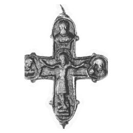

Catalog › CE-0027 · LOV1999-21
Valvă anterioară de encolpion kievean cu Răstignirea
sec. XI–XII (1001–1200) · Székesfehérvár, Fejér (Kom.), Ungaria · Muzeul Național Maghiar, Budapesta, inv. 1894.2.6
single valve of a reliquary cross, bronz; c. XI–XII (1001–1200); found at Székesfehérvár, Fejér (Kom.), Ungaria; kept at Muzeul Național Maghiar, Budapesta.


Identificare
- Categorie
- Valvă izolată
- Material
- Bronz
- Tehnică
- Turnare în relief; Aurire
- Dimensiuni
- Î 93 × L 67 mm
Iconografie
- Avers
- Răstignirea (Hristos cu perizoma)
- Descriere avers
- Hristos răstignit cu perizoma, cu glorie cruciformă, pe suppedaneum; deasupra capului, tăblița cu litere. Sus și pe laturi, busturi în relief; cele laterale în medalioane plastice, cu Maria și Ioan în atitudine de jelire. Suprafața este puternic tocită, inscripțiile sunt ilizibile.
Datare și atribuire
- Datare
- sec. XI–XII (1001–1200)
- Centru
- Rusia Kieveană
Descoperire
- Localitate
- Székesfehérvár
- Regiune
- Fejér (Kom.)
- Țară
- Ungaria
- Context
- Colecție (fără context)
- Coordonate
- 47.1910° N, 18.4108° E
- Precizia locului
- Doar localitatea
Păstrare și referințe
- Colecție
- Muzeul Național Maghiar, Budapesta
- Nr. inventar
- 1894.2.6
- Bibliografie
- Zs. Lovag, Mittelalterliche Bronzegegenstände des Ungarischen Nationalmuseums (Catalogi Musei Nationalis Hungarici, Series Archaeologica III), Budapest, 1999, p. 27, cat. nr. 21, reprodusă la Abb. 21 (planșele, p. 133). Bibliografie citată în sursă: Bárány-Oberschall 1953, 229; Lovag 1971, 159, Fig. 5/2.
- Figura
- Abb. 21
- Planșe
- Lovag 1999, planșele, p. 133
- Observații
- Datare după Lovag: sec. XI–XII. XI–XII. Locul de descoperire este dat doar după spusele vânzătorului („angeblich”). Intrat în muzeu prin cumpărare, împreună cu diverse obiecte preistorice. Câte un nod ieșit în fața capetelor rotunjite ale brațelor. Coordonate: ale localității (aproximative), nu date în sursă.
Citare: Corpus Encolpiorum, CE-0027, Valvă anterioară de encolpion kievean cu Răstignirea, --root/piese/LOV1999-21/ (accesat 2026-10-20).